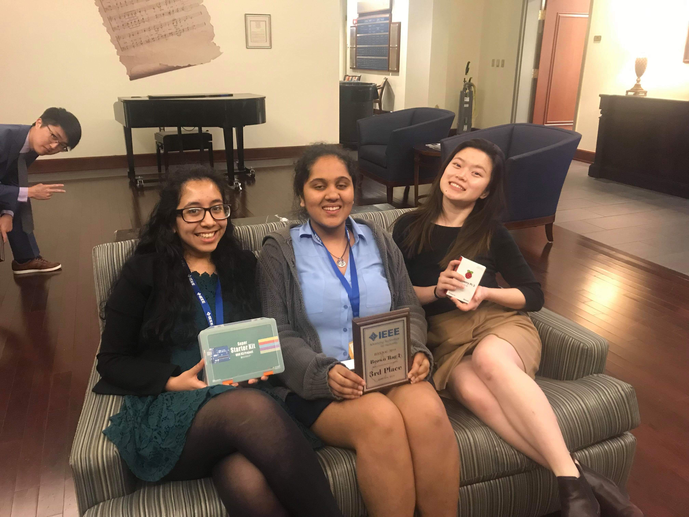
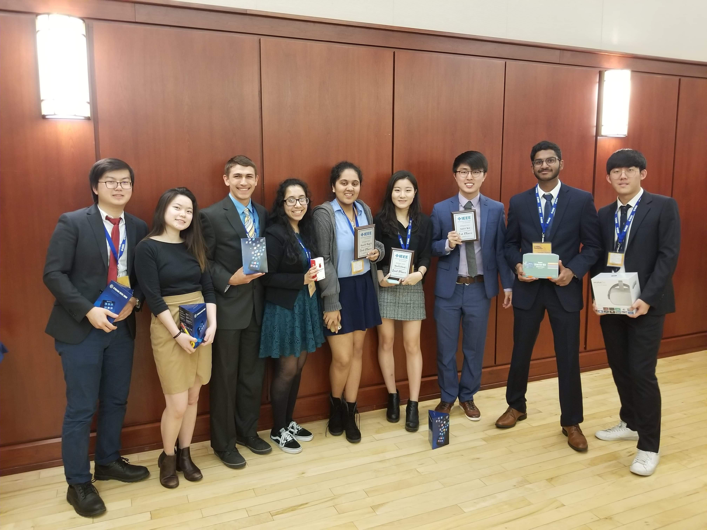
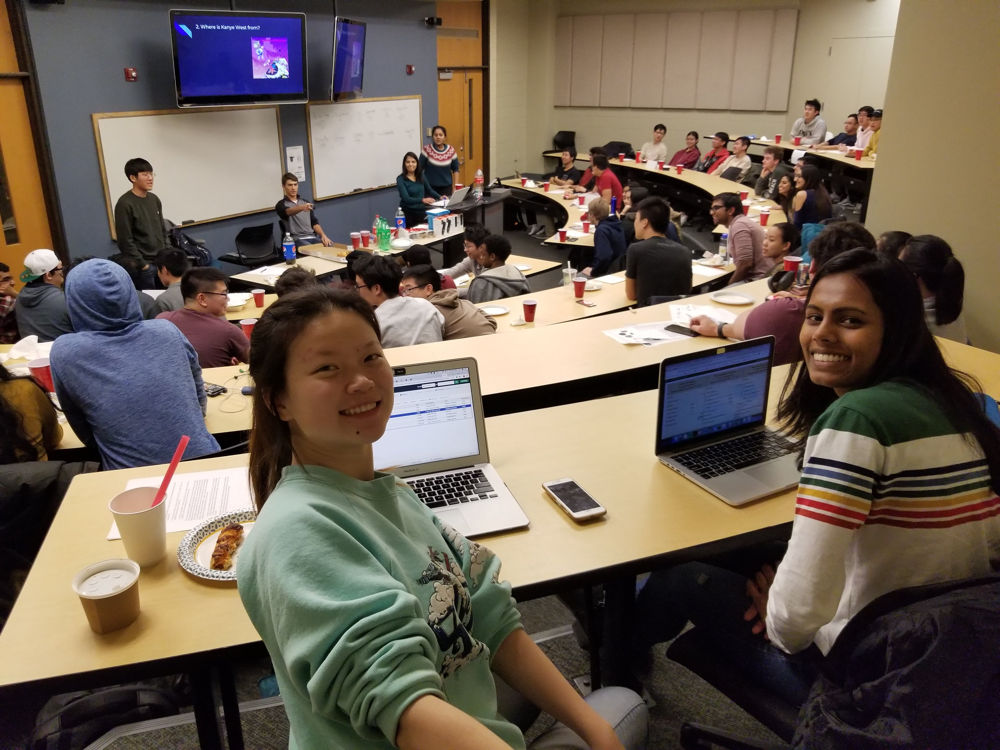
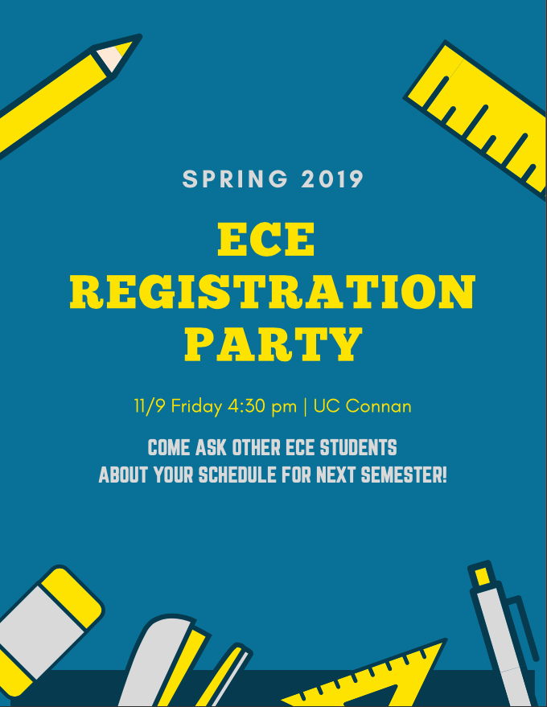
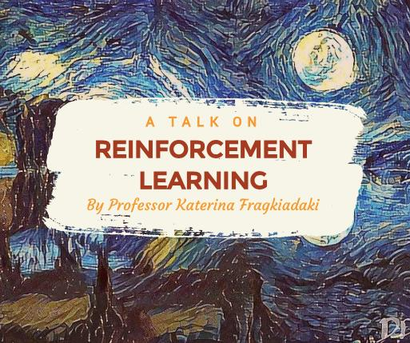

ECE Grace Hopper 2020 Scholarship Application
Yuhan Xiao
Some of my most memorable experiences at CMU
-
From knowing nothing about ML, to building and training a dense neural network from scratch to analyze 10K data to predict pet adoption rates(and wrote a paper and made a cute poster)
-
From a web development newbie, to researching under Professor Ozan Tonguz and working with a team of amazing peers to develop full-stack web applications for aircraft warning systems
-
From someone with no knowledge of social cues, to leadership roles in ECE and campus-wide organizations(Senate, Greek life, etc)
My contribution to the community
-
Built an ECE student organization from the ground up; created a communal space for all ECE students to bond
-
Expanded and consolidated the CMU IEEE chapter, growing it from 3 to 14 core members
- Drafted handbook for running organization
- Made templates for tracking and planning budget
- Revamped communication channels(facebook, website, slack)
-
Brought in new events for student body, such as our Professor Talk, Game Night, IEEE Regional Conference, etc





Why I am excited to go to GHC(again)
-
I could find peers with similar interests in software engineering, and potential partners for side projects; (virtually) connect with friends I made from other women-in-tech communities(Women of Rewriting the Code, etc)
-
Being a big nerd for startup culture, it is a great opportunity for me to talk to smaller companies at once, who seldom make the trip down to Pittsburgh for TOC
Why pursue an education and career in technology
- It is an evolving industry with never ending challenges; this motivates me to learn and keep up
- Technology can be leveraged to solve problems existing in other industries
- A well-written piece of code always brings me joy